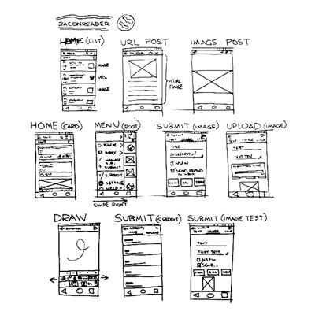
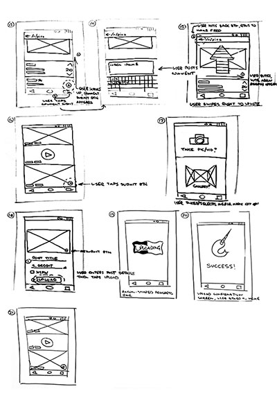
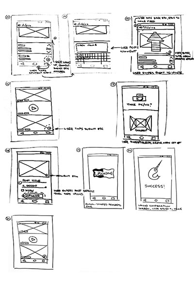

The focus of my redesign project was a popular Reddit app, BaconReader. Out of the numerous competitors, including the official Reddit app, I ultimately chose BaconReader due in large part to my own familiarity with and affinity for the app.
Why do such a thing? Well, because in my experience few apps have done little more than display content as an endless text-based list and pigeonhole users into a single subreddit. This approach, while great for skimming over a high volume of similar content, isn’t particularly engaging.
This project was my first ever foray into user experience design. As a rookie UX designer, I developed the app’s design principles and followed a workflow in accordance with Jake Knapp’s, Sprint, How to Solve Big Problems and Test New Ideas in Just Five Days.
Just for fun I opted to rename and rebrand the app Whal/r/, in honor of Reddit’s collective love for the noble and majestic narwhal.
My goal for the first day was to target a problem that I could solve by the end of the week. So, based on my own expectations of Reddit users, I tried to build out a (very) rough process map.

By the end of day one I had set my sights on building a simple solution for post submission and commenting. In so doing, I set a mandate for my redesign effort - provide an easily navigable experience that encourages users to engage with and share content while maintaining a lightweight design.
Throughout my Tuesday session I reviewed relevant Baconreader functionality, rendered a handful of solution sketches and attempted a rapid rework of the day’s ideas through the “Crazy 8’s” exercise.
For the lightning demo exercise I sketched several screens from the app that paralleled my target flows – post submission and commenting.
A couple things I learned from my initial analysis of BaconReader:
I found it striking that the most basic of functions, navigation and sharing, were relegated to drop-down menus and the main menu. Given that BaconReader (and Reddit for that matter) is intended to facilitate browsing and sharing of unique content I felt assured of my decision to reprioritize those functions.
My sketches helped me to develop simple, intuitive solutions for my target flows as well as plot the overall behavior of the app itself.


The rather intense, one-minute ideation sessions were somewhat helpful (if a bit nerve-racking). And though they were few, I was able to jot down ideas for user interaction, layout, etc.

Wednesday, I took the best sketches and rendered a storyboard. A welcome result of this exercise was my gaining appreciation for what users might expect and how they would interact with my new app.
 

My proposed solution abandoned the text-based feed layout and implemented the two major changes: subreddit titles in the navbar, and share button moved to post title bar.
When I tackled the user flow for submitting posts and comments I knew no amount of navigational improvements would matter if I didn’t reduce the steps required to complete those tasks. Furthermore, I wanted to be certain users were never more than a couple taps away from content.

My main objective at this point was to firm up the concepts explored in my first sketches. This included incorporating the subreddit titles into the navbar with the aim of increasing the speed of browsing much like location-based breadcrumbs.
As I began to explore the user flow for submitting posts and comments it occurred to me that I’d unnecessarily added an extra step: forcing users into a single use screen to choose between taking a picture or selecting from the device gallery. My second round of wireframes removed the screen and added a multi-function submission button for images/video and URL links instead.
Five users were asked to complete several tasks using the second iteration of wireframes as a prototype. During testing, users were encouraged to elaborate on their interactions with the prototype as they attempted to complete each task. Typically, users took about 8 seconds to do so.

Testing also revealed some interesting details about viewing posts, post submission flow, and the accessibility of the sort function. Not only did submission and sort tasks take between 18 and 24 seconds to complete but also accounted for the two sole failures in the entire round of testing.
I attributed the involvement of multiple screens and options as well as significant decision making to the prolonged completion times for post submission. The sort function, however, seemed to be more clearly flawed as users spent in excess of 20 seconds simply trying to locate the button. Lastly, with a median completion time for viewing a post at 10 seconds I discovered another pain point I’d need to address in my future designs.
Following testing I rendered some screens keeping a few lessons in mind, namely, (1) the means to view and sort content must be more apparent, (2) users need simple navigational tools, and (3), priority functions must be available outside of drop-down menus.
First of all, I did away with the drop-down menu and in its place used “tabs” for the user’s subscribed subreddits. Highlight using the orange.
Also, I made a point to move the share button outside of the menu, placed instead on the first post view screen.